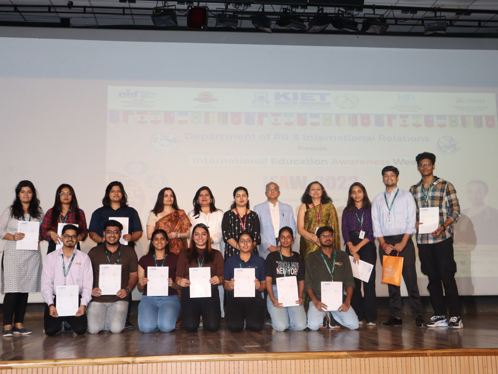
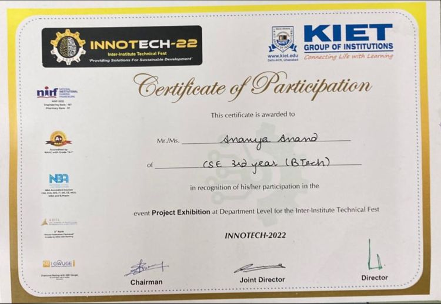
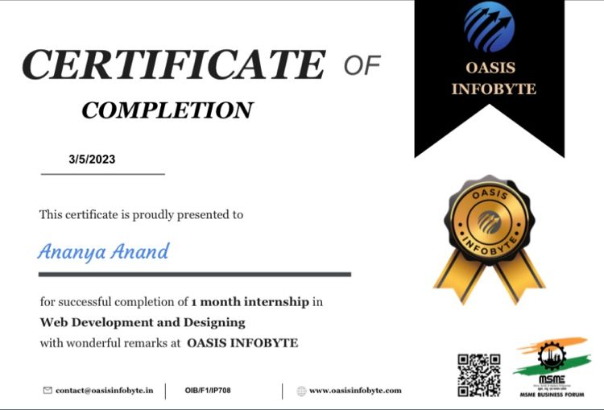

My Experiences & Achievements
- TEDxKIET is a non-profit organization dedicated to fostering ideas and innovation across diverse fields which has been a transformative experience for me from Volunteer to Management and Content Head.
- Starting as a volunteer, I had the opportunity to immerse myself in a dynamic environment that values creativity and collaboration.
- My responsibilities expanded significantly in coordinating with prominent speakers, sponsors, and audiences from various sectors, ensuring that each event not only met but exceeded expectations.
- My role involved securing sponsorships, managing budgets, and overseeing documentation and resource allocation, all of which required meticulous attention to detail and effective communication skills.
- Throughout this journey, I learned invaluable lessons about the importance of deadlines and efficiency in teamwork.
- Collaborating with a diverse group of individuals taught me how essential it is to embrace uniqueness, allowing each member's strengths to shine.
- I also developed robust stress management skills, enabling me to navigate challenges and deliver results under pressure.
- Implementing strategic marketing initiatives was a key aspect of my role, and I am proud to say that these efforts led to optimal outcomes within budget and timeline constraints.
- Successfully executing three major events—TED Circles, TEDxKIET 2022, and TEDx Women 2023—stands as a testament to our hard work and dedication.
- Each event was a huge success, drawing in enthusiastic audiences and fostering meaningful conversations.
- My time with TEDxKIET has not only enriched my professional skills but also deepened my appreciation for the power of ideas and community engagement.
My Journey with TEDxKIET

- I am elated to share with you my latest publication of research paper in NeuroQuantology, titled "Survey on Natural Language Processing."
- This paper delves into the transformative role of Natural Language Processing (NLP) in enhancing human-machine interactions.
- In this comprehensive survey, the key NLP techniques that are pivotal in the realm of machine learning were discussed. Among the techniques discussed are:
- Document Segmentation: This method helps in breaking down text into manageable segments, making it easier for machines to process and analyze information.
- Part-of-Speech Tagging: The paper highlights how this technique assigns grammatical categories to words, facilitating more nuanced understanding and interaction.
- Word Sense Disambiguation: The research addresses the challenges of multiple meanings of words, emphasizing techniques to clarify context and improve communication accuracy.
- The findings underscore the significance of NLP in creating seamless and effective dialogues between humans and machines.
- As technology continues to evolve, the research contributes valuable insights into how these techniques enhance user experiences and drive innovation in various applications.
Research Paper Published in 2022: Survey on Natural Language Processing

You can visit my paper on: NeuroQuantology
- At the KIET Group of Institutions, I am delighted to announce the successful completion of my German Language Course at the A-1 level in 2021.
- This program has equipped me with essential language skills, enabling to communicate effectively in basic German.
- As part of the commitment in promoting language education, I participated in the International Education Awareness Week, where my hard work and dedication were recognized.
- I am thrilled to celebrate and share my achievement as one of the Top 10 Performers for outstanding proficiency in the German language.
- This recognition underscores the institution's focus on academic excellence and our commitment to fostering a multicultural learning environment.
- The skills gained through this course not only enhanced my personal growth but also open doors to global opportunities in education and career pathways.
German Language Course 2021: A-1 Level Certification


- At Aashman Foundation, our vision is to cultivate a society where every child can thrive to their fullest potential, and where true equality is a reality for all.
- As a dedicated volunteer for this impactful non-governmental organization, I devoted my time and effort to supporting underprivileged children and widowed women.
- During my time with Aashman, I witnessed firsthand the resilience and determination of those we serve.
- I engaged in various initiatives aimed at providing educational resources, skills training, and emotional support.
- Working closely with children, I aimed to inspire them to dream big and pursue their aspirations, regardless of their circumstances.
- For the widowed women, we offered programs designed to empower them with skills and opportunities, helping them regain their confidence and independence.
- My experience at Aashman Foundation was not just about giving; it was also about learning and growing alongside those I sought to help.
- The stories of hope and perseverance from the individuals we served reinforced my belief in the importance of community and compassion.
- Together, we are working towards a brighter future, one where every child and woman can enjoy the equality they deserve and the opportunity to prosper.
- I am grateful for the opportunity to contribute to such a noble cause and look forward to continuing this journey of empowerment and change.
Aashman Foundation: Empowering Futures

- In 2022, I had the privilege of participating in the KIET Group of Institutions' annual tech fair, Innotech, where innovation and creativity took center stage.
- I showcased my project, Elderly, an app designed specifically to assist older adults in navigating government websites with ease.
- The app provides hassle-free, user-friendly guidelines, making it simpler for elderly users to access essential services and information online.
- Understanding the challenges many face in adapting to technology, I aimed to create a solution that empowers them, ensuring they can manage their needs independently and confidently.
- Participating in Innotech was an incredible experience. It allowed me to connect with fellow innovators and share insights on the importance of inclusivity in technology.
- I am proud to have contributed to a project that not only demonstrates technical innovation but also addresses real-world challenges faced by a significant segment of our society.
- Through Elderly, I hope to make a positive impact on the lives of older adults, helping them navigate the digital landscape with greater ease and improving their overall quality of life.
- The feedback and support I received during the fair further motivated me to continue developing solutions that prioritize accessibility and user-friendliness.
Innotech 2022: Showcasing Innovation for the Elderly

- In 2023, I had the opportunity to enhance my web development skills through Oasis Infobyte, where I focused on HTML, CSS, and JavaScript.
- During this time, I developed and deployed several web applications that showcase my ability to create engaging and functional online experiences.
- One of my standout projects was a Tours and Travels landing page.
- I designed an interactive and user-friendly interface that features dynamic content, effectively highlighting budget-friendly travel packages.
- This project allowed me to blend creativity with functionality, ensuring that users could easily navigate through options and find the best travel deals.
- Another project I’m proud of is a Temperature Converter tool. This interactive application enables users to switch seamlessly between Fahrenheit and Celsius, providing real-time updates for immediate feedback.
- Building this tool not only reinforced my JavaScript skills but also highlighted the importance of user experience in creating practical applications.
- Additionally, I created a personal portfolio website to effectively showcase my technical skills, project highlights, and achievements in web development.
- This portfolio serves as a comprehensive representation of my work, allowing potential employers and collaborators to see my capabilities and creativity at a glance.
- Overall, my experience with Oasis Infobyte has been incredibly rewarding, as it has not only improved my technical skills but also equipped me with the ability to design user-centered applications that make a difference.
- I look forward to continuing my journey in web development and exploring new opportunities to innovate and create!
Oasis Infobyte: Web Development Projects

You can visit my projects on: a) Personal Portfolio
b) Temperature Converter
c) Landing Page